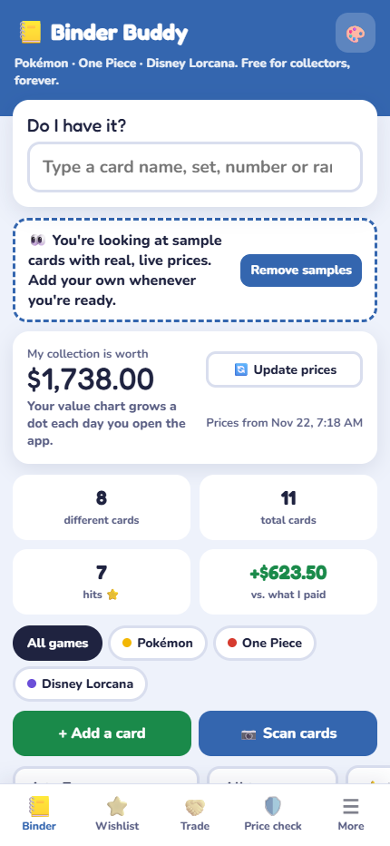
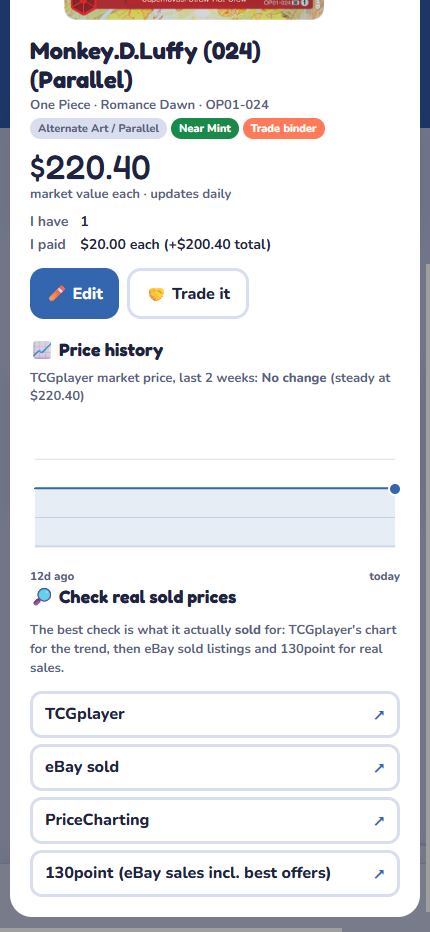
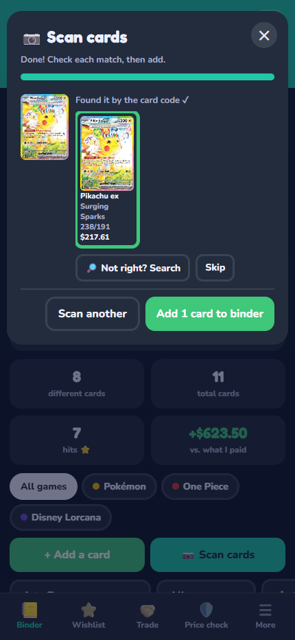
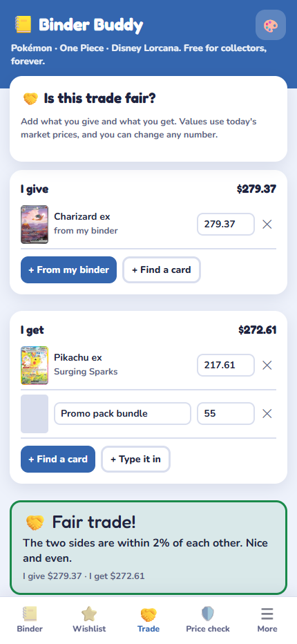
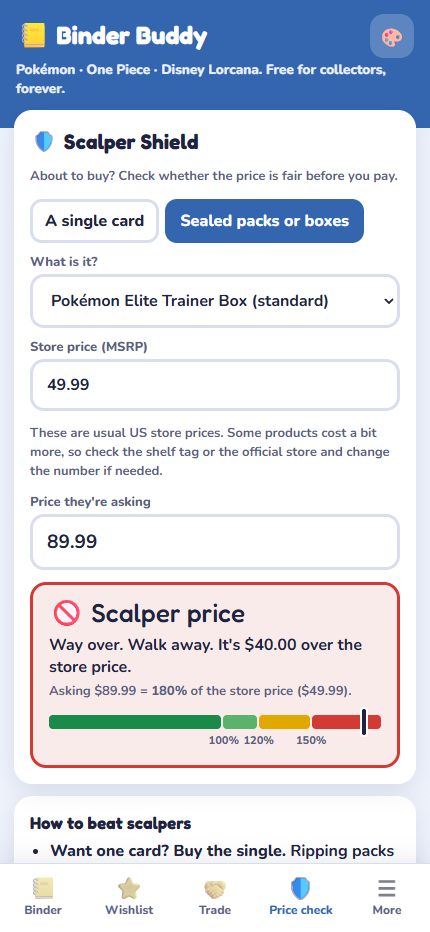
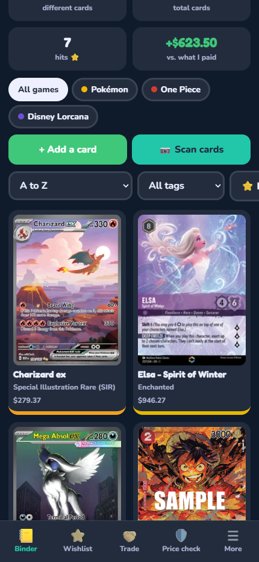

The problem
Card collecting is huge again, and so is the money around it. The most popular collection apps keep the features collectors use most behind a subscription. Collectr's Pro tier, for example, is listed at $7.99/month or $59.99/year on the US App Store and includes unlimited scanning, years of price history and exports. Meanwhile, younger collectors are the easiest targets for scalpers and unfair trades.
Goal: one free app that does the whole job (catalog, value, scan, trade, buy smart) and is safe for a 10-year-old to use: no account, no ads, no chat, no data collection.
Research
I compared the leading apps and read their public reviews to find the gaps.
| What collectors want | Typical app today | Binder Buddy |
|---|---|---|
| Scan cards | Paywalled after a few scans, or a subscription | Free and unlimited. Runs on your phone, so photos never upload |
| Price history | Paid tier | Free: daily per-card log, 2-week market history (One Piece), Cardmarket trend (Pokémon), plus exact sold-price links |
| Multiple games | Varies | Pokémon, One Piece, Lorcana, each with the correct rarity ladder |
| Fair trades | Rare | Built-in trade checker with a plain-language verdict |
| Avoid scalpers | Not a focus | Scalper Shield: asking price vs. market or MSRP, on a gauge |
| Privacy | Account required, data in the cloud | No account. IndexedDB on the device, plus backup files |
Competitor pricing from the Collectr App Store listing (checked November 2026). Features and prices change, so check the store before relying on them.
Screens






Architecture
PWA · IndexedDB · Service worker
OpenCV.js picture matching · Tesseract.js OCR · SVG charts
TCGdex · Lorcast · OPTCG API
There is no backend. The app is a static site on GitHub Pages. Three community databases, each with a different shape, are normalized into one card model, so every screen can treat Pokémon, One Piece, Lorcana and Magic the same:
{ game, src, id, name, set, num, rarity, img, tcgId,
variants: { holofoil: 217.61, reverse-holofoil: 3.10 }, // USD market prices
v: "holofoil", market: 217.61, trend }
- Caching & courtesy: set lists are cached for 3 days, and the One Piece catalogue (about 3 MB) is cached for 20 hours and searched locally. Lorcast calls are spaced 120 ms apart, and Pokémon calls run 4 at a time. A daily refresh updates every linked card quietly in the background.
- Offline: the service worker serves the app network-first (instant updates) and card images cache-first, with a size cap.
- Privacy by design: requests contain only a card name or number. Fonts are self-hosted, so there are no Google calls. Photos are compressed to JPEG blobs and never leave the device.
The hard part: scanning without a server
Approach
Image-recognition APIs cost money per scan and would mean uploading kids' photos. Instead, Binder Buddy reads the tiny printed card code that every card has, using on-device OCR:
- Pokémon:
238/191(number / set size) - One Piece:
OP01-120 - Lorcana:
207/204 • EN • 1(number / set size • language • set)
Pipeline
- Split a binder-page photo into 9 or 12 pockets and trim the pocket edges.
- For each pocket, run greyscale and contrast passes on the whole card, the code strip zoomed in, each bottom corner, then the name bar. It stops early once an exact code is found.
- Parse codes with regexes that tolerate common OCR slips (for example, a "•" read as "+").
- Pokémon trick: a code like
025/165has no set name, so the app finds every set with 165 cards and asks each for card 025. Name text breaks ties. - If no code is readable, it falls back to name search and labels the result a guess. The user always confirms before anything is saved.
Results on real card images (test page tests/scan.html)
Single cards: 4 of 5 matched exactly (after adding a dedicated crop for the One Piece code corner and tolerance for common misreads like "0501" for "OP01"). The fifth (a full-art whose number sits beside gold stars) found the right Pokémon but the wrong print, so I added a look-alike check: the photo and each print's official picture are shrunk to a 12×16 color grid and compared, and the closest look goes first. Now 5 of 5 come out on top.
It learns from mistakes. When someone picks a different card than the first guess, the app remembers what it read and which card was right, on their device, so the same misread is fixed next time. Fixes from a printed code are trusted; fixes from the name alone are only hints, so one fix can't force every Mega Absol to the same print. A 🚩 Report button writes up what the scanner read and what was right (never the photo) as a GitHub issue. Checked fixes go into js/fixes.js with a test, so everyone gets them in the next update. A person reviews each one, so pranks can't teach it wrong answers. On a simulated 9-pocket page built from the same small images, 5 of 9 pockets matched in about 26 seconds. Phone photos are much higher resolution, which helps. Because the system never auto-saves a guess, a wrong read costs one tap instead of a wrong collection.
Version 2.7: picture matching plus text, checked against each other
Real users' photos were blurrier than my test images, and reading text alone wasn't good enough: a binder page came back mostly wrong. So the scanner now does two independent checks on the phone:
- Find and straighten each card with OpenCV.js: edge and brightness outlines, plus a "what isn't the table?" colour check for blurry photos. One rule mattered most: a box holding 3+ separate boxes is the binder page. My first version said 2+, but every card holds two boxes (its picture and its text), so each card was treated as a page and the scanner matched the picture boxes instead. Fixing that took binder pages from 47% to 94% right.
- Compare colours against a fingerprint list of every English Pokémon card that has a picture in TCGdex: 19,107 cards, 22 MB, downloaded once. A quick pass narrows the list, and a careful pass tries small shifts and zooms while ignoring glare.
- Measure how sure it is by how far the best match stands out from the best card with a different name. Old cards have identical reprints, and the printed number is what tells those apart.
- Combine the checks: the picture alone decides only when it's extremely sure. Wrong matches never scored above about 10, so the cut-off is 15. Otherwise the name or number read off the card must agree. If they disagree, or nothing is sure, you tap the right card.
Results on simulated photos (real card pictures, warped, blurred, with fake glare): clear single photos got the right Pokémon 99–100% of the time (the exact print 93–96%; the misses were identical reprints the number settles). Very blurry photos with heavy glare got 70–83%. In a full run of 132 cards (60 single photos and 8 binder pages) with both checks, the scanner never confidently picked a wrong card, and it found exactly 9 cards on every page. When it wasn't sure it asked. A second page fix helped here: an outline straddling two cards could invent a fake column, so columns closer than a card's width now count as one. Next step: test on real phone photos.
Design decisions
- Kid-safe defaults: "Share my hits" hides prices unless you turn them on. There's no chat or social feed, and the trade guide starts with "Under 18? Trade online only with a parent."
- Trade Links instead of accounts and chat: the cards you list are compressed into the part of a share link after
#, which browsers never send to any server. A friend opens it and the app matches their wishlist and suggests a fair trade (a small subset search that prefers cards the other person wants, keeps their side within 5% of fair, and stays within the extra you said you are OK giving). Every field in an incoming link is checked, and pictures load only from the three card databases, so a link can't inject code or track whoever opens it. Deals finish in person, so the app never holds money, addresses or messages. For card shop trade nights the link also shows as a QR code drawn on the device. Every QR size was read back with a separate decoder; one size (version 23, low error correction) failed with that reader even though it matches the standard, so the app skips it and uses the next size up. - Set progress from three different sources: Pokémon sets report their printed size, Lorcana marks chase cards by rarity, and One Piece marks them as parallel prints, so each is mapped to the same "142 of 191, plus chase cards" model. Lorcana cards saved before this feature had no set code, so the app looks those up once, pausing between calls as the Lorcast API asks.
- Plain language: verdicts like "📉 You'd lose value. Ask them to add about $61.76" instead of raw percentages.
- Honest numbers: sample cards use real live prices, and the value chart never invents history. It grows one point per day.
- Make it yours: 9 themes and custom colors, dark mode chosen with its own colors (not just inverted), color-coding by game, rarity, condition or tag, and three layouts.
- Accessibility: labelled controls, dialogs that close with Escape and return focus, live regions, a data table behind every chart, and support for reduced motion and forced colors.
Five games, one card model
Each source has its own rules, and the app follows them: Scryfall (Magic) allows free apps to show its data but forbids fading or recoloring card images, so missing Magic cards in set progress get an outline instead of greying out, and prices come 75 cards per request. YGOPRODeck (Yu-Gi-Oh!) asks apps not to hotlink its pictures and to keep data locally, so Yu-Gi-Oh! cards show your own photo and card data is cached on the device. Yu-Gi-Oh! needed two more fixes: the database can give one card several ids (one per artwork), so a printing is identified by what's printed on it (set code and rarity); and regions number sets differently (LOB-E021 isn't LOB-021), so set progress groups by card, not by number.
Planning for failure
- Card databases down: every lookup retries with growing waits, respects "slow down" (429) answers, and times out; prices keep their last known values and the app says what happened.
- Phone storage full: saves fail with a plain message, and the app never shows a change it couldn't save.
- Data loss: Safari can erase a website's storage if it isn't opened for about a week, so iPhone users get an Add to Home Screen tip, and everyone gets a backup reminder after a month.
- Big binders: 1,500 cards draw in about 0.16 s and search in about 0.1 s; each price update asks for each card once, and Magic prices come 75 cards per request.
- Links from the future: a trade link made by a newer version asks you to update instead of calling itself broken.
Quality
- A unit-test suite of 18 groups covers the pure logic (
js/logic.js): rarity mapping for three data sources, trade and price verdicts, bundle math, bulk-add parsing, OCR code parsing, card matching, the trade suggester and the scanner memory. Opentests/in any browser. - End-to-end checks in headless Edge at phone size covered the first-run tour, sample data with live prices, price history, trade flow, Scalper Shield, scanning and dark mode.
What's next
- Star Wars: Unlimited. Its free database doesn't send CORS headers, so a browser-only app can't call it; it would need a small proxy.
- Better scanning with a small on-device image-matching model for full-art cards.
- Optional, private sync between your own devices.
About
Designed and built by Micah Alaniz (Sweet Onion Studios), with Claude Code as an AI pair programmer. I make fun, useful software for kids, families and hobbyists. GitHub